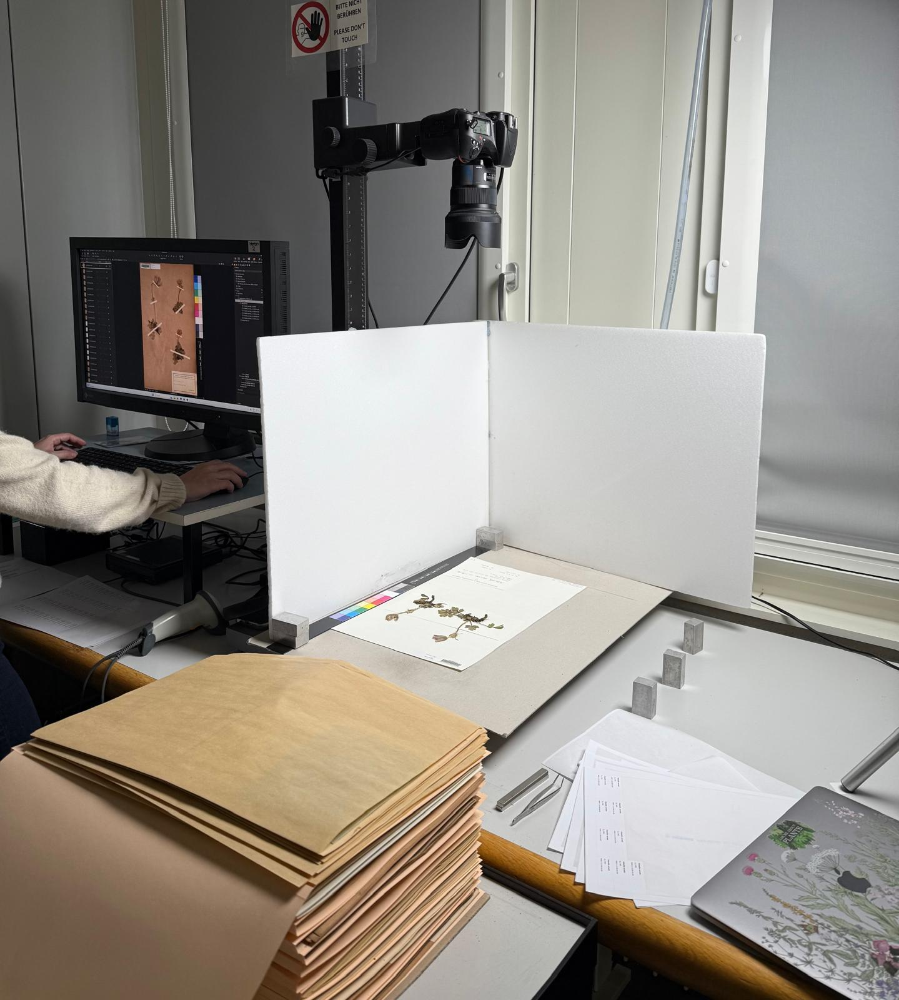

This project examines whether in situ plant responses, quantified through trait change in historical herbarium specimens, help explain mismatches between predicted and observed range shifts under climate change.

Photo by Billur Bektaş
Many plant species do not shift their elevational ranges as fast as expected under climate change. One proposed explanation is trait acclimation: plants may adjust their morphology and physiology in situ, reducing the need for immediate range shifts. However, direct evidence for trait change through time has been limited by the lack of historical trait data.
In this project, I use herbarium specimens from the Swiss Alps to reconstruct how plant traits have changed across space and time and to test whether phenotypic plasticity helps explain mismatches between predicted and observed range shifts. By combining historical collections with leaf spectrometry, computer vision, and statistical modeling, I quantify trait acclimation over the past century and assess how it relates to range shifts versus range stasis inferred from species distribution models (SDMs) under climate change.
I quantify temporal changes in morphological and physiological traits using herbarium specimens collected before and during recent climate change, allowing direct comparison across defined climatic periods.
I compare species that have shifted their distributions with species showing range stasis to test whether differences in trait plasticity are associated with different spatial responses to climate change.
I focus on traits linked to plant performance and resource use, including leaf morphology and physiology (e.g. leaf mass per area, leaf nitrogen), measured non-destructively from historical material.
I link trait measurements at the individual level to quantify species-level plasticity and to relate changes in traits under climate change to range lags inferred from SDMs.
This project is based at ETH Zürich within the Plant Ecology Group and is carried out in close collaboration with the United Herbaria Z+ZT. Methodological development and analyses are conducted with Alessia Guggisberg, Maria Santos (University of Zürich), Tiziana Koch (University of Zürich), and William Weaver (University of Michigan), combining expertise in trait ecology, leaf spectrometry, and computer vision.
Within the scope of this project, I supervised Marie Mathys (MSc project), Stefanie Lambrigger (MSc project and thesis), and Lena Zhou and Julia Bernet (short-term research positions).
The project is funded by the ETH Zürich Career Seed Award: Back to the future: Unlocking herbaria with AI and spectrometry to understand plant range shifts under climate change.